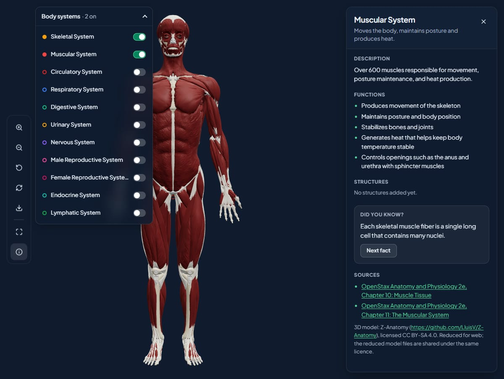

Take the body apart, one system at a time
Start with the skeleton, then add muscles, nerves or blood vessels. Click a structure and the camera glides to it, with its name and function beside the model.
- Drag to turn, pinch or scroll to zoom, reset when you get lost.
- Save an image of the view for your notes.
- Quiz yourself beside the model. It’s never graded.
Body systems set up at your school:
